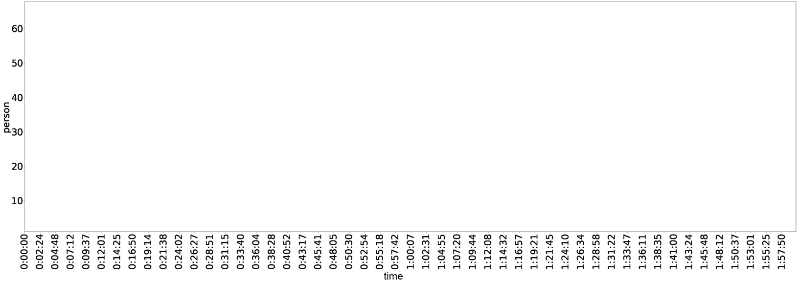
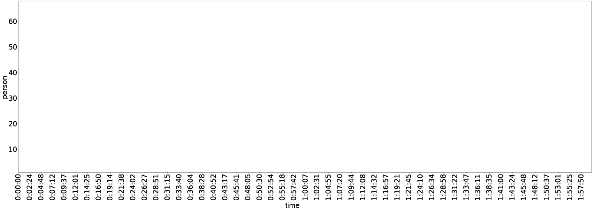

Hongqian Li
Table of Contents
1 – Systems
Open Space
A system mapping of NYC Open Plaza Program.

What is the system?
The New York City Plaza Program is an initiative by the New York City Department of Transportation (NYCDOT) aimed at increasing the availability of public open spaces in the city. System Function: Transform underused streets into vibrant, social public spaces to to ensure that all New Yorkers live within a 10-minute walk of quality open space. The elements of this system include the NYCDOT, community partners (usually non-profit organizations), physical spaces (the plazas themselves), and users.
In the NYC Open Plaza Program system, the primary stocks are the quantity and quality of the plazas.For the quantity stock, the inflow is the opening of new plazas, and the outflow is the closure of existing plazas. Various factors contribute to these inflows and outflows. The opening of new plazas can be influenced by increased funding, greater community engagement, supportive policies, outreach initiatives, and improving public health conditions following the COVID-19 pandemic. Conversely, policy changes, community opposition, funding cuts, and public safety concerns can contribute to the closure of plazas. There is a balancing feedback loop at play here: as the quantity of plazas increases, if these plazas are not well-managed, it could lead to the closure of some plazas, thus decreasing the overall quantity. For the quality stock, the inflow is the improvement of existing plazas, and the outflow is their degradation. Factors that can contribute to the improvement of plazas include good design, effective management, inclusivity and accessibility, and well-planned events. On the other hand, poor management and unjust practices can lead to degradation of plazas. There is a reinforcing feedback loop in this aspect of the system: when the quality of the plazas improves, it attracts more community support and funding, which can then be used for further improvements, thus enhancing the overall quality of the plazas.


What are the shareholders?
Stakeholders of the New York City Open Plaza Program may come from multiple fields and can be categorized according to their roles and concerns. Government Agencies: This includes the NYC Department of Transportation, which manages and oversees the execution of the plaza program. The city planning department may also be involved, focusing on the overall city layout and development. Community Organizations: These could be non-profit organizations, community development teams, or resident associations. They are concerned with how the plaza serves the community and whether the use of the plaza meets the needs of community residents.
Commercial Stakeholders: This could include nearby shops and businesses. They may be concerned about how the construction and use of the plaza affect their business. Plaza Users: This includes residents, tourists, pedestrians, etc. They are concerned about the facilities and activities in the plaza, and whether the overall environment of the plaza is conducive to their use. Funders: This can be the government, foundations, donors, etc. They may be concerned about whether their funds are effectively used and what the benefits of the plaza are.
"Cities have the capability of providing something for everybody, only because, and only when, they are created by everybody." - Jane Jacobs
What are its leverage points?
In the NYC Open Plaza Program system, potential leverage points could include:Community Engagement: Policies or initiatives that effectively boost community engagement can have a significant impact. The success of plazas largely depends on the involvement of community members who can help shape plaza design, maintain cleanliness and order, as well as organize events.Facility Maintenance and Design: Consistent, high-quality facility maintenance and plaza design that meets community needs can significantly increase the attractiveness and utilization of plazas, thereby improving the effectiveness of the entire system.
Funding: Reliable and adequate sources of funding are crucial to the operation of the system. Investments in plaza maintenance, renovation, and event organization all directly impact the quality and usage of the plazas.Site Selection Inclusiveness and Accessibility: The site selection process for new plazas can greatly influence the entire system. Ensuring that this process is inclusive, meaning that it takes into account the needs and inputs of diverse community members, and focuses on locations that are easily accessible, can significantly broaden the impact and relevance of the plazas.


2 – Authorship
Bridging the Gap
Co-authorship: NYC Public Cultural Life System
In recent years, advancements in artificial intelligence (AI) have revolutionized various industries, including design and architecture. One notable area of progress lies in utilizing AI models to foster collaboration between professionals and the general public. By acting as a bridge, AI can facilitate the translation of creative ideas from non-professionals into a format that professionals can understand and implement. This essay explores the significance of shared authorship in design and how AI models such as pix2pix GAN and Deep Convolutional Generative Adversarial Networks (DCGAN) contribute to this process. Through the examples of an interactive community park design platform and the DeepScope project, we will discuss how AI enables citizens to actively participate in the design process and enhance the quality of urban spaces.

The Power of Shared Authorship: Shared authorship, which involves the collaboration between professionals and the public, offers numerous benefits in the design process. It empowers communities by allowing them to voice their ideas and actively participate in shaping their environments. By involving citizens, professionals gain valuable insights and ensure that designs align with the needs and preferences of the intended users.

The Role of AI as a Bridge: AI models such as pix2pix GAN and DCGAN act as powerful tools to bridge the gap between professionals and non-professionals in the design process. These models enable the translation of non-technical ideas into professional renderings, making it easier for professionals to comprehend and implement the concepts proposed by the public. a. Pix2pix GAN: The interactive community park design platform described in the research paper demonstrates the capabilities of the pix2pix GAN model. Through the platform, citizens can sketch their visions for the park using different colors, expressing their creativity without the need for technical skills. The model then translates these sketches into technical plan renderings, allowing non-professionals to visualize their ideas in a professional format. This translation process ensures that the collaborative design process becomes more inclusive and accessible.

b. DCGAN in the DeepScope Project: The Media Lab's DeepScope project takes a different approach, utilizing DCGAN and a Tangible User Interface (TUI) to facilitate real-time city prototype designing and visualization. By using Lego models, users can construct physical representations of urban design concepts. These Lego models are then processed by the DCGAN, which generates perspective renderings of the proposed designs. This tangible and interactive approach encourages citizens to actively engage in the design process and provides them with a clearer understanding of how their ideas can be realized.

Fostering Creativity and Implementing Ideas:The implementation of AI models in collaborative design not only enhances the participation of the public but also fosters creativity. By leveraging AI to transform non-professional ideas into professional renderings, citizens can see their visions come to life in a tangible and visually appealing format. This process encourages further ideation and exploration, empowering individuals to contribute actively to the design of their community spaces.
In conclusion, the utilization of AI models such as pix2pix GAN and DCGAN in collaborative design processes allows for shared authorship between professionals and the public. AI acts as a bridge, transforming non-professional ideas into a format that professionals can comprehend and implement. Through the examples of the interactive community park design platform and the DeepScope project, we have seen how AI empowers citizens to actively participate in the design process, fosters creativity, and enhances the quality of urban spaces. As we move forward, embracing AI in design can contribute to more inclusive and innovative solutions, ensuring that the voices of all stakeholders are heard and respected.
3 – Politics
Counting on the Public
Leveraging AI to Decode Bureaucracy and Enhance Public Engagement in NYC City Planning
Visualizing Public Engagement: An Analysis of Participation in City Planning Public Hearings
 

The dataset for this study is derived from the NYC Department of Planning's Public and Special Meeting Disposition Sheets & Videos. I selected a most recent video from June 7, which focused on the Madison Square Garden Special Permit. From this video, I extracted 500 evenly distributed screenshots and employed an Object Detection and Segmentation algorithm (Mask R-CNN) to identify the number of participants in the meeting. This approach provides a snapshot of public participation in the planning process. My findings indicate that the average number of attendees in the meeting was approximately 12. Interestingly, the screenshot with the highest number of individuals, 84 in total, was a perspective drawing of the project itself.
"We can imagine Utopias that are procedural, open ended, participative."
Decoding the Bureaucracy: Reimagining Meeting Sheets for Enhanced Public Engagemen with ChatGPT
I selected the disposition sheet PDF from the NYC Department of Planning and mapped its structure. I found that the document does not provide a space for recording public opinion, focusing instead solely on the voting results of the planning commission. To explore how this could be made more participatory, I utilized ChatGPT for suggestions. The AI proposed a more participatory version of the sheet that could include additional sections such as a Public Opinion Section, Public Voting, Decision Making, Community Representative, and Online Participation.
I gathered public opinions from Reddit about the Madison Square Garden project, incorporating these perspectives into the reimagined form. The feedback revealed several concerns about the project's impact on pedestrian traffic and local aesthetics. Respondents described the area around Madison Square Garden as chaotic, with heavy traffic and incessant honking, which created a challenging environment for pedestrians. Safety concerns were also raised, particularly regarding the compatibility of the arena with Penn Station. A prevalent sentiment was that relocating the arena could potentially resolve issues associated with Penn Station. This viewpoint was echoed by Community Board 5 (CB5), which, upon reviewing the application, determined that the Madison Square Garden Arena did not meet the findings of Article 74-41 of the zoning resolution. The board strongly advocated for the arena's relocation as the preferred solution to address the multitude of issues surrounding Penn Station.Decoding the Bureaucracy: Reimagining Meeting Sheets for Enhanced Public Engagemen with Midjourney
I also asked Midjourney to reimagine the record sheet for a participatory city planning public hearing. The prompt was: 'A participatory city planning public hearing record sheet.' The reimagined version presented some intriguing visuals. For instance, there was an augmented reality format of the meeting sheet. The redesigned sheet was filled with diagrams, making it easier for the public to comprehend. Additionally, it was teeming with 'messy' doodles and sticky notes, each brimming with handwritten opinions. This creative chaos encapsulates the essence of public participation, capturing a multitude of voices and perspectives.
Mapping Political Power Dynamics in Zoom Meeting Spaces
By analyzing the elements and structure of both Zoom meetings and physical meeting rooms, I observed uneven power dynamics. In Zoom meetings, the maximum screen count is typically three: one for the representative speaking, one for commission members, and one for the meeting's poster slide. In physical spaces, power division is more apparent, with commission members seated on a pedestal and glass barriers separating people.
To reimagine these spaces as more participatory, I engaged Midjourney. The results were intriguing. For Zoom meetings, one suggestion was an interactive board where participants can chat and share opinions. Another was a game-like virtual meeting where attendees become characters in a city game. A simpler suggestion was to increase the number of people visible on the screen beyond the current limit of three. For physical meeting rooms, the reimagined design featured a long table where community members could sit alongside commission members for discussions. This layout promotes a sense of equality and encourages more open dialogue.
4 – Governance
$ Lender Money $
A profile of governance.
5 – Behavior
$ Lender Money $
Modeling agents of the system.